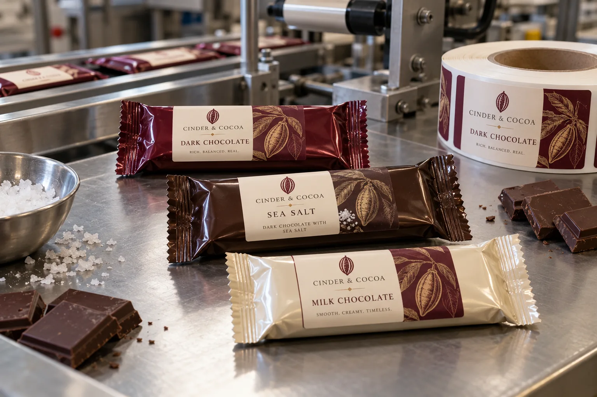

The wrapper is not a flat board
A chocolate buyer may bring three excellent designs and one shared foil wrapper. That can be a sensible small-run strategy. The part I would inspect first is the wrapped bar, not the PDF. Flow wrap gathers at the ends and may arch over the bar. A label placed across a crimp or a deep crease asks the adhesive to solve a geometry problem it did not create.
HERMA's guide to labels on tubular food bags includes chocolate bars and describes the challenge of uneven flexible-film surfaces and frequent product variation. It supports a package-specific trial, not a universal film or adhesive recommendation.
One wrapper, three flavors
Imagine a composite maker launching dark, milk and sea-salt bars in a short seasonal run. A common base wrapper limits obsolete printed packaging, while a fully designed front label distinguishes the flavors. I would give the flavor name more space than the brand slogan; on a small bar, the shopper should not have to turn it around to discover what it is.
Now imagine a composite co-packer whose bar height changes slightly after a recipe change. The wrapper's top panel may become more rounded. If the original label size starts flagging at the edge, reducing the face width can be better than buying a more aggressive adhesive that makes placement errors harder to correct.
Decide the sequence at the line
Check whether labels are applied before or after bars are wrapped, where the web presents a stable panel, and how the product is supported during wipe-down. Keep end crimps, opening notches and the rear fin seal outside the proposed label footprint. If a lot or date code is printed later, reserve a compatible, legible field and test the actual printer-ribbon combination.
| Decision | Buyer evidence |
|---|---|
| Wrapper | Exact film and surface finish |
| Panel | Finished bar at smallest and largest thickness |
| Artwork | Every flavor at printed size |
| Line | Application sequence and speed |
| Variable data | Code method and scan or readability target |
Our buying view
Use the sticker to simplify the SKU decision
I like a shared wrapper when it makes short runs manageable. I do not like it when every bar needs a worker to smooth a label over wrinkles. First make the placement repeatable; then optimize the print cost.
What to send before quoting
- Actual wrapped bars for each size and flavor.
- Wrapper film specification and any overprint coating.
- Front panel, crimp and opening-feature dimensions.
- Label application method, quantity and code requirements.
See stock packaging plus custom labels for the cost decision and preprinted labels with thermal-transfer overprint for late-added codes.
Frequently asked questions
Can a printed label go on any chocolate flow wrap?
The wrapper film, print coating, surface cleanliness and panel shape all matter. Test the intended construction on finished wrapped bars.
Can the label cover a crimped end seal?
Avoid assuming it can. Keep seals and opening features clear unless the packaging engineer has validated that placement on the real pack.
Does one label size suit every flavor?
Often one dieline can support several flavors, but the product name, artwork contrast and any variable print area should be checked at actual size.
Related buyer guides
Review your label specification
Send package photos, label dimensions, material details, quantity and application conditions. Include good and failed samples where possible so the discussion starts with evidence.
Continue with Chocolate Gift Box Bands: Keep the Lid Free and the Label Flat for a focused purchase checklist.